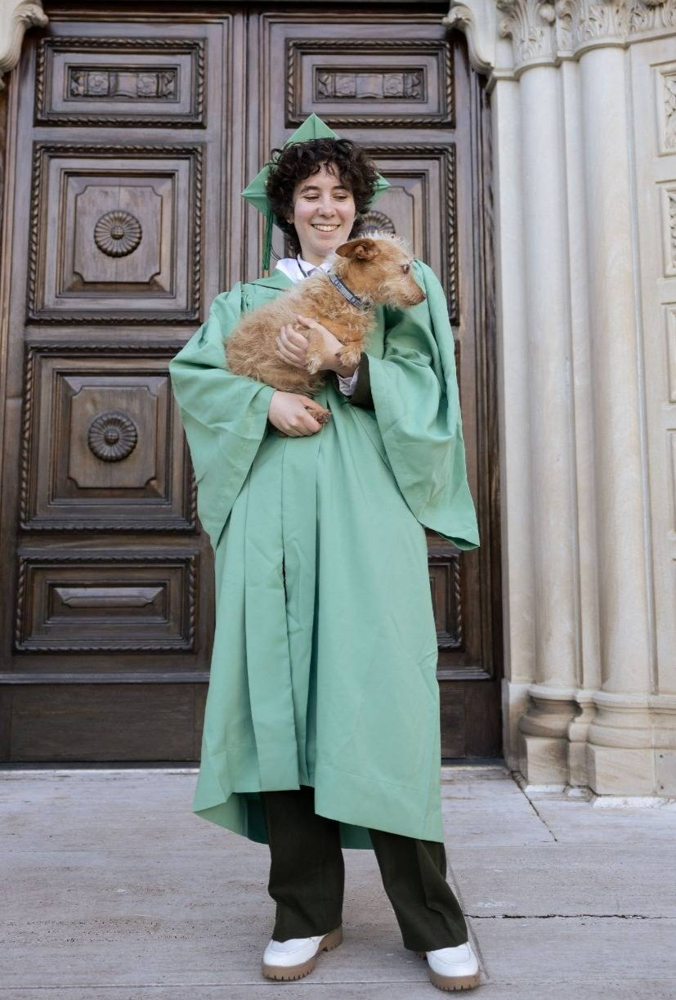

|

Pronouns: they/them and he/him elehavi@ucsc.edu LinkedIn || GitHub || ORCID |
I'm a PhD student in the Hardware Systems Collective at UC Santa Cruz, and am advised by Dustin Richmond. I'm broadly interested in Computer Architecture and Hardware, and enjoy the intersection of theory and hardware. I am also interested in FPGA's, High-Performance Computing, memory and storage, and energy efficiency. My current project is implementing a MatMul-free neural network accelerator using ternary weights on an FPGA. My Bachelor's degree is from Scripps College in Art and Computer Science. I did my CS major through Harvey Mudd's program. Outside of CS/CE, I enjoy drawing, making and reading comics, non-human simians, tea, desserts, and maintaining a healthy sleep schedule. I also speak English and Hebrew fluently, and am learning Spanish. |